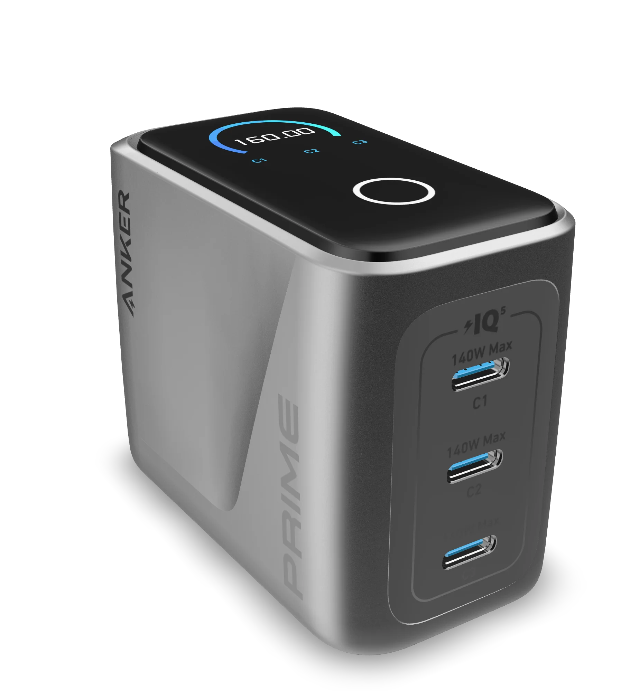

实时总览

功率曲线
最近 5 分钟端口状态
电压 · 电流 · 功率Prime 160W A2687 · BLE
先开启电脑蓝牙，完全退出手机 Anker App。160W 同时只能连接一个客户端。
登录右侧账号可自动填入 ID；也可以手动输入。
已保存的蓝牙设备
Prime 250W A2345 · CLOUD
先用手机 Anker App 绑定设备并连接 Wi-Fi，再使用同一个账号登录。
已保存的云端设备
CUKTECH 10 Ultra AD1204U · BLE
先在手机米家中绑定充电器，再扫码导入配对信息。连接电脑前请退出手机米家设备页面。日常功率读取通过本机蓝牙进行。
手动输入 MAC / Token
已导入或保存过 Token 的设备可留空。Token 经 Windows DPAPI 加密保存，不进入日志或普通设置。
已保存的酷态科
模拟充电器
无需硬件体验各型号的界面，不会混入真实能耗。
每日能耗
按充电器实际输出功率积分；电脑睡眠、断连或超过 15 秒的数据间隔不补算。此处不包含充电器自身损耗，模拟数据不计入。
通过 Matter 接入 Apple 家庭
家庭桥接在本机运行。开启后，用 iPhone 家庭 App 扫描二维码或输入配对码。端口功率需要支持电力功能的家庭 App；开关端口须先允许端口控制。
电脑与手机应处于同一局域网，允许 Windows 防火墙的本地网络访问。程序退出或电脑睡眠后，家庭中将无法响应。整机与端口均添加会重复统计功率，建议只添加其中一组。Windows 移植版的实际家庭配对尚需验证。
偏好设置
选择后立即保存，适用于所有充电器的功率、电压和电流显示。云端没有新数据时保留最近读数；连接、曲线和能耗记录保持原频率。
登录 Windows 后自动在托盘运行，不弹出主界面；桌面组件按下方设置显示。点击托盘图标可打开应用。
确认有负载时展开。暂停输出满 2 分钟收成一行，满 5 分钟隐藏。
{total} · {c1} · {c2} · {c3} · {c4} · {a1} · {a2}
高级
默认关闭，与原版一致。关闭端口会中断连接到该端口的设备供电。
包括充电模式、自定义分配、250W 屏幕与实验室开关、主题图片。命令沿用原版协议，需结合你的设备固件验证。
Windows 移植版。160W 蓝牙和 250W 云端连接已由用户实测确认；Apple 家庭配对仍待验证。Windows 新版需手动更新。